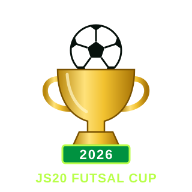

최
최세호팀
함께 뛴 팀

장성고등학교 20회2026 풋살컵 연도2026다시 모여, 다시 뛴다.
함께 뛴 팀
우승
참가자 명단이 확정되면 팀 추천 기능이 활성화됩니다.
레드 가운 · 6명
그린 유니폼 · 6명 · 우승
공영호는 고정 팀 명단과 별도로 참여했습니다.
실제 출전 명단과 수상 기록을 남깁니다.
라인업 확정 후 공개됩니다.
2026 우승
최다 득점
최다 도움
경기 MVP
우승 · 한승효팀 / 득점왕 · 김동진 / MVP · 한승효
2026년 10월 17일 · 세종풋살파크 · 사진을 누르면 크게 볼 수 있습니다.
장성고등학교 20회 풋살컵을 대표하는 회장입니다.
매년 날짜·선수·결과만 업데이트하면 같은 주소에서 계속 사용할 수 있도록 구성했습니다. 이전 대회 기록도 에디션별로 쌓을 수 있습니다.
10월 17일 · 경기 전
→